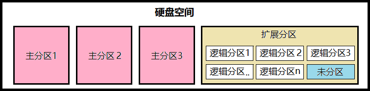

六）硬盘管理
硬盘、分区的命名及查看
Linux 中硬盘命名及规则
linux 中所有的设备都是以文件形式出现，硬盘亦如此。
「命名」
硬盘设备文件名的格式一般为 /dev/xxy 。
「规则」
/dev 目录中存放的都是系统中的设备文件。
/xxy 中
xx表示硬盘的类型。xx可能的值为：sd，表明这是采用 SCSI、SATA、USB 接口的硬盘。hd，表明这是采用 IDE 接口的硬盘。（少见）
y表示使用此类接口的第几个硬盘。可能为a-z间的英文字符。
「示例」
/dev/sdb表示系统中第二个使用sb类型的硬盘。/dev/hdd表示系统中第四个使用hd类型的硬盘。
Linux 中硬盘分区的命名及规则
「概念」
硬盘分区有三种：主磁盘分区、扩展磁盘分区、逻辑分区。
关于分区，一个硬盘中：
- 主分区至少有1个，最多4个
- 扩展分区可以没有，最多1个
- 主分区+扩展分区不超过4个
- 逻辑分区从属于扩展分区，可以有若干个
- 1-4 号分区是保留给主、扩展分区的，逻辑分区一定由 5 号开始。
理解与解释：
一个硬盘中可以有 1-4 个主分区，如果存在扩展分区，则最多可以有 3 个主分区（主、扩分区据说是受 MBR 约束）。如果想要更多分区，则使用扩展分区表（EBR）将扩展分区分为若干逻辑分区，且仍可剩余未分配空间。

硬盘容量与分区关系：
- 硬盘容量 = 主分区总容量 + 扩展分区总容量（没有则忽略）
- 扩展分区 = 逻辑分区总容量 + 未分区容量（没有则忽略）
「注意」
上述分区方式应为 MBR 的分区方式，GTP 方式可直接将硬盘分为 1-128 个主分区。分区方式不同，分区操作也有不同。
「命名」
硬盘上分区的文件名格式一般为 /dev/xxynpn 。
「规则」
其中 /xxyn 中，n 表示扩展分区。
「分区划分方式」
- 主分区/扩展分区使用数字 1-4 表示
- 逻辑分区使用 >=5 的数字表示
「示例」
/dev/hda3表示在第一个 IDE 硬盘上的第三个主分区/dev/sdb6表示在第二个 SCSI 硬盘上的第二个逻辑分区
fdisk 命令查看硬盘
语法：fdisk -l <硬盘名|分区名>
「示例」
查看第一块硬盘：
fdisk -l /dev/sda
输出：
磁盘 /dev/sda：21.5 GB, 21474836480 字节，41943040 个扇区
Units = 扇区 of 1 * 512 = 512 bytes
扇区大小(逻辑/物理)：512 字节 / 512 字节
I/O 大小(最小/最佳)：512 字节 / 512 字节
磁盘标签类型：dos
磁盘标识符：0x000d46a4
设备 Boot Start End Blocks Id System
/dev/sda1 2048 4196351 2097152 82 Linux swap / Solaris
/dev/sda2 * 4196352 41943039 18873344 83 Linux
「说明」
第一部分：
| 字段 | 说明 |
|---|---|
| 第1行 | 硬盘容量 |
| 第2行 | 每个柱面的容量 |
| 第3行 | 每个扇区的容量 |
| 第4行 | 磁盘最小逻辑和物理单元（磁盘读写的最小单元） |
| 第5行 | 硬盘标签类型 |
| 第6行 | 硬盘标识符 |
第二部分：
| 标题 | 示例 | 说明 |
|---|---|---|
| Device(设备) | /dev/sda1 | 分区名 |
| Boot | 是否允许标准DOS PC主引导记录引导该分区。 | |
| Start | 2048 | 分区的起始柱面 |
| End | 4196351 | 分区的结束柱面（紧邻下一起始柱面） |
| Blocks | 2097152 | 显示大小为 1k 的块的数量 |
| Id | 82 | 分区的预期用途（不代表分区的真实用途）。82表示Linux交换分区，83表示Linux数据分区 |
| System | Linux swap / Solaris | 表示上一字段 ID 的类型 |
「注意」
示例输出第一部分为逻辑值，并实际硬盘的真实物理参数。
固态硬盘虽然没有盘片、磁头、扇区这些物理零件，但固态硬盘的接口规范和定义功能以及使用方法上与普通机械硬盘完全相同。因此，逻辑上固态硬盘也有以上参数。
示例输出第二部分如果没有分好区，则显示为空白。
硬盘分区和格式化
分区工具选择
Linux 中对硬盘分区有很多工具，如 fdisk、gdisk、cfdisk、cgdisk、sgdisk、parted 等。
这里选择 fdisk。
fdisk 命令用法
「用法」
fdisk <硬盘名> 更改分区表
fdisk -l [硬盘名] 列出分区表
「示例」
输入以下命令进入分区更改界面：
fdisk /dev/sda
「注意」
由于使用的是虚拟机，且没有为该虚拟机分配多余空间，无法直接使用 sda 新建分区。有两种解决方法：
① 使用 sda 的主分区 sda2 ，进一步划分分区，可用于学习实验使用，但保存分区配置会失败。。
② 使用虚拟机软件给当前虚拟机新增一个 2G 的硬盘。对于 VM 15 Pro，依次点击：虚拟机》设置》找左下的「添加」按钮》选择硬盘》3次下一步》磁盘大小改为 2G 》下一步》完成》确定。重启虚拟机即可。
fdisk工具内命令
进入
fdisk分区页面后，在「Command (m for help):」或「命令（输入 m 获取帮助）：」后输入以下命令使用相关功能。
命令及说明
| 命令 | 说明 |
|---|---|
m |
帮助信息 |
n |
新建分区 |
d |
删除分区 |
l |
列出 Linux 默认支持的文件系统类型 |
p |
打印分区表（相当于在 bash 中使用 fdisk -l <硬盘名>） |
t |
通过修改分区 ID，修改分区类型 |
w |
写入操作到分区表并退出 |
q |
不保留操作并退出 |
x |
进入专家模式 |
n 新建分区
输入 n 回车，提示选择主分区 (p) 还是扩展分区 (e)。如果已存在扩展分区，将会用逻辑分区 (l) 替换原扩展分区的位置。
「选择新建主分区」
① 直接回车（默认选择主分区 p）或输入 p 回车。
② 提示输入分区号，直接进行回车或根据提示输入 1-4 。如果提示「No free sectors available」表示无剩余扇区可用，即没有多余空间可分配。该情况可使用某个主分区进行分区设置，如使用 fdisk /dev/sda2 进行配置。
③ 接着提示输入起始扇区，如无特殊情况，直接回车即可。
④ 接着提示输入结束扇区（这个不好算），一般输入 +size<K|M|G> ，表示分配相应大小的空间。如 +100G ，表示分配 100G 大小的空间。（注意带单位，不带单位默认为 k）
「选择新建扩展分区」
① 输入 e 回车。
② 提示输入分区号，直接进行回车或根据提示输入 1-4 。如果提示「No free sectors available」表示无剩余扇区可用，即没有多余空间可分配。
③ 接着提示输入起始扇区，如无特殊情况，直接回车即可。
④ 接着提示输入结束扇区，如输入 +10G ，表示分配 10G 大小的空间。
「选择新建逻辑分区」
〇 建立扩展分区后再次输入 n 新建分区，将会以该选项（新建逻辑分区）替代之。
① 输入 l 回车。
② 提示输入分区号，直接进行回车或根据提示输入 1-4 。如果提示「No free sectors available」表示无剩余扇区可用，即没有多余空间可分配。
③ 接着提示输入起始扇区，如无特殊情况，直接回车即可。
④ 接着提示输入结束扇区，如输入 +10G ，表示分配 10G 大小的空间。
分区设置完毕，输入 p 命令查看是否修改成功。
t 修改分区类型
① 输入 t 回车。
② 输入要修改的分区号。
③ 输入要修改的 ID 编号。
完成，输入 p 命令查看是否修改成功。
创建文件系统/格式化分区
硬盘分区之后一般需进行格式化分区
mkfs 命令（Make Files' System）
「用法」
mkfs -t <类型> <设备目录> 文件系统类型；若不指定，将使用 ext2 。
「示例」
mkfs -t ext4 /dev/sdb6
mkswap 命令（Make Swap）
「示例」
mkswap /dev/sdb7将 sdb7 设置为交换空间，无需进行格式化，交换空间指定格式为 swap。
手动挂载分区
准备
「挂载点概念」
Linux 的文件系统是一个树形结构，这个目录的根就是「根目录」(/)，根分区在开机的时候就自送挂载在根目录上了。我们划分并格式化好的分区也要挂载到这个目录上的某个目录上，才能被使用，否则这个分区就没有访问的入口。这个目录被称为该分区的挂载点。
因此我们需将划分并格式化好的分区挂载到目录树上去。
「系统其他挂载点」
在 bash 中输入 mount 命令查看挂载点。其显示的内容并不都是真正的硬盘分区，而是建立在内存中的一些特殊的虚拟分区。
sysfs on /sys type sysfs (rw,nosuid,nodev,noexec,relatime,seclabel) #用于管理设备
proc on /proc type proc (rw,nosuid,nodev,noexec,relatime) #用于存放进程及内核信息
......
tmpfs on /dev/shm type tmpfs (rw,nosuid,nodev,seclabel) #暂时存放文件
devpts on /dev/pts type devpts (rw,nosuid,noexec,relatime,seclabel,gid=5,mode=620,ptmxmode=000) #用于管理设备
......
「准备」
在根用户下执行以下命令：
- 在根目录下创建目录：
mkdir /mountdisk - 进入目录：
cd /mountdisk - 创建 5 个目录分别用户挂载 sdb1，sdb5-8 ：
mkdir document shared image music video
mount 挂载命令
一般需要根用户权限
「用法」
mount [-hV] 无选项时表示：查看挂载点
mount [-fnrsvw] [-t <vfstype>] [-o <opts>] <分区名> <挂载点>
「选项」
| 选项 | 说明 |
|---|---|
-a |
自动挂载所有支持自动挂载的设备；(定义在了/etc/fstab文件中，且挂载选项中有“自动挂载”功能) |
-V |
显示版本 |
-h |
显示帮助 |
-r |
以只读方式挂载文件系统。同 -o ro |
-w |
以可读可写的方式挂载文件系统。默认使用次方式。同 -o rw |
-n |
挂载时不更新 /etc/mtab |
-t <vfstype> |
指定挂载分区的文件系统类型，通常不必指定。mount 会自动选择正确的型态。 |
-o <options> |
指定分区挂载后的一些行为属性 |
vfstype 表示文件系统类型，可能的值有 adfs, affs, autofs, cifs, coda, coherent, cramfs, debugfs, devpts, efs, ext, ext2, ext3, ext4, hfs, hfsplus, hpfs, iso9660, jfs, minix, msdos, ncpfs, nfs, nfs4, ntfs, proc, qnx4, ramfs, reiserfs, romfs, squashfs, smbfs, sysv, tmpfs, ubifs, udf, ufs, umsdos, usbfs, vfat, xenix, xfs, xiafs.
-o <options> 中 options 可以是 rw/ro 可读可写(默认)/只读、auto/noauto 打开(默认)/关闭自动挂载模式等。详见 Linux中挂载详解以及mount命令用法。
「示例 1：指定挂载分区的文件系统类型」
mount -t ext4 /dev/sdb1 /mountdisk/document
使用 mount 命令查看挂载点，最下方出现以下内容：
/dev/sdb1 on /mountdisk/document type ext4 (rw,relatime,seclabel,data=ordered)
「示例 2：使用 -o 指定挂载后的行为属性」
mount -t ext4 -o ro /dev/sdb5 /mountdisk/shared
「注意」
如果挂载点原来存在文件，则分区挂载到该挂载点后原来的文件将被隐藏。
umount 卸载命令
一般需要根用户权限
「用法」
umount [-ahnrvV][-t <文件系统类型>][文件系统|设备名|挂载点]
「示例」
umount /dev/sdb7
「注意」
当卸载分区内有数据时，卸载后通过原挂载点无法访问该分区数据。但数据依然存在与该分区。
自动挂载分区
手动挂载可能会需要在重启系统后重新挂载分区。
/etc/fstab 文件
该文件用于指定开机挂载的分区。
「打开」
vim /etc/fstab
「解释」
| 字段 | 示例 | 说明 |
|---|---|---|
| 1 | UUID=XXX | 指定了要挂载的文件。可以是 /dev 目录下的设备文件，或通过 UUID 或设备标签（LABEL）指定设备。 |
| 2 | / | 挂载点。swap 是没有挂载目录就是 swap。 |
| 3 | ext4 | 挂载分区的文件系统类型。 |
| 4 | defaults | 挂载参数。指定文件系统挂载后的一些行为属性，可以为多个参数，使用逗号进行分隔。 |
| 5 | 1 | Dump 参数。该选项被「dump」命令用来检查一个文件系统是否应该进行 dump 备份。不需要设为 0，每天备份设为 1，不定期备份设为 2 |
| 6 | 1 | 开机检查分区的次序。该字段被 fsck 命令用来确定系统开机进行文件系统检查时的顺序。根分区的值为 1，表示优先。2 表示次优。如果该字段为 0 或没有设置，开机将跳过此文件系统的检查。 |
「修改示例 1：用设备名修改」
/dev/sdb1 /mountdisk/document ext4 defaults 0 0
由于硬盘可能会存在经常的插拔，因此硬盘的次序和硬盘的设备名有可能会发生改变。如上一次为 sdb ，下一次就变为 sdc。所以该自动挂载的配置就失效了。
为此，我们可以为硬盘增加一个标签或UUID。
标签. 标签就是给硬盘起的一个有意义的别名。但标签可以不唯一。 ↩
为分区加标签的命令. 语法：e2label 分区设备名 标签名。如：e2label /dev/sdb5 shared_disk↩
UUID. 全局唯一标识 (Universally Unique Identifier)。是标识系统中存储设备的一个字符串，不论是何类型。是唯一的、不变的。 ↩
列出存储设备的UUID. 使用 blkid 列出所有存储设备的UUID。 ↩
「修改示例 2：用标签名修改」
LABEL=shared_disk /mountdisk/shared ext4 defaults 0 0
此方式使用的 LABEL 标签不一定唯一。
「修改示例 3：用UUID修改」
UUID=d9eae11c-f50c-4a34-92db-62d12a9be0dd /mountdisk/image ext4 defaults 0 0